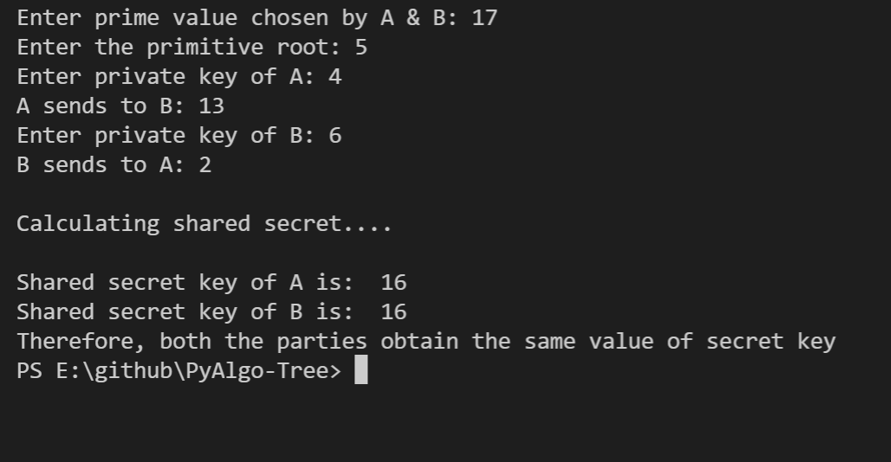
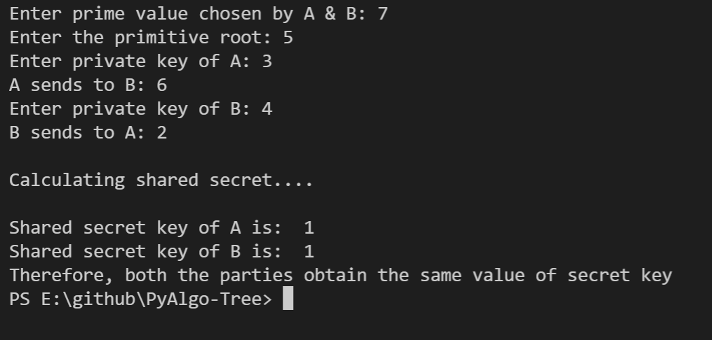
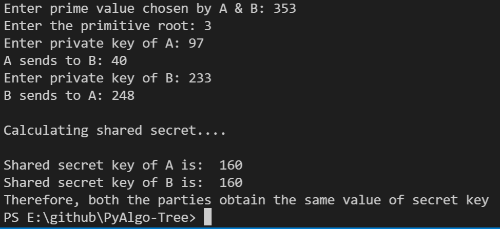

DIFFIE HELLMANN KEY EXCHANGE ALGORITHM
Aim
The Diffie–Hellman (DH) Algorithm is a key-exchange protocol that enables
two parties communicating over public channel to establish a mutual secret
without it being transmitted over the Internet.
Purpose
To create an algorithm of diffie-hellmann key exchange
Short description of package/script
-
The problem is solved using diffie-hellmann key exchange algorithm
- We use Python to solve this
Workflow of the Project
Explaination of Diffie Hellmann
Algorithm of Diffie Hellmann
-
Alice wants to communicate with Bob they must agree large prime number
i.e. p & q
-
Alice selects secret large random integer number a and calculate A i.e
A= q^(a) mod p
- Alice sends this A to Bob
-
Bob independently selects another secret large random no b and calculate
B i.e B= q^(b)mod p
- Bob sends the number B to Alice
- Alice is calculating his secret key Ak i.e Ak= B^(a) mod p
- Bob is calculating his secret key Bk i.e Bk= A^(b) mod p
-
If Ak = Bk then Alice and Bob can agree for future communication called
as Key agreement.
- We have Ak = Bk = K
Compilation Steps
To run the script, simply type
python diffie_hellman.py in the command prompt After the
script is run, follow the steps provided below:
- Enter the prime number which is decided by the two parties
- enter the primitive root
-
enter private key of party1 and party2. Now both of them calculates
their public key and send these numbers to each other
-
Both the parties calculate the value of secret key at their respective
side.
-
After calculating, if they get both same shared secret key, they can
communicate safely
Output



Author
Dilrose Reji